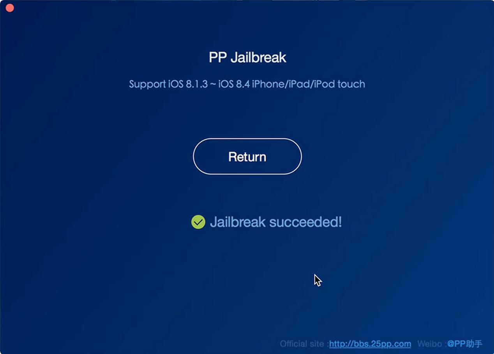

Cài đặt apt: http://everyday-tech.com/apt-get-on-centos/
(sử dụng yum thay vì apt
<div class=’bogus-wrapper’><div class=”highlight”><table><tr><td class=”gutter”><pre class=”line-numbers”>1
B1: Tải phần mềm mới nhất của PP jailbreak trên trang http://www.iphonehacks.com/download-pp-jailbreak .
B2: Kết nối máy tính sử dụng USB cable.
B3: Tắt Passcode trong Settings > Touch ID & Passcode.
B4: Tắt Find my iPhone trong Settings > iCloud > Find my iPhone.
B5: Tắt iTunes và xCode trước khi mở PP Jailbreak.
B6: Mở file PP Jailbreak dmg và copy tập tin app vào thư mục Application.
B7: Mở ứng dụng PP Jailbreak. Sẽ xuất hiện màn hình như bên dưới
B8: Nhấn nút Jailbreak ở giữa màn hình để bắt đầu jailbreak.
B9: Chờ trong 1 khoảng thời gian để ứng dụng jailbreak máy.
B10: Sau khi jailbreak thành công sẽ có màn hình như bên dưới.

Cài đặt appsync
Mở ứng dụng Cydia
Chọn phần Sources > Edit
Chọn Add để thêm các source sau vào
http://repo.appvv.com
http://repocydia.com
http://repo.hackyouriphone.org
http://cydia.angelxwind.net
Nếu có hỏi thì chọn “Add anyway” và update …
Sau đó chọn done
Vào phần Search gõ AppSync > Install
Một số tweak của iOS 8.4
Mirmir: mở nhiều ứng dụng cùng lúc
Callbar: thu nhỏ màn hình nghe điện thoại ở góc trên
StickerMe: nhắn tin iMessage giống giống facebook
Applocker/BioProtect: khóa ứng dụng
iFile: quản lý tập tin
Tham khảo: http://cydia.vn/tong-hop-cac-tweak-lam-cho-ios-8-4-cua-ban-hoan-hao/
Xử lý lỗi khi bị treo táo
B1: Download firmware mới nhất và tương thích với thiết bị iOS của bạn từ liên kết ở trên. Để firmware ở thư mục nào đó mà bạn dễ tìm kiếm.
B2: Kết nối iPhone bị treo táo vào máy tính, lúc này máy tính sẽ không nhận iPhone và bạn cần phải đưa iPhone về chế độ DFU Mode để iTunes có thể nhận iPhone. Nói nôm na ra thì DFU Mode là chế độ đặc biệt mà khi ở chế độ này iTunes sẽ nhận iPhone dù máy có bị treo, nhờ vậy bạn có thể tiến hành restore máy để khắc phục lỗi treo táo. Cách đưa iPhone về DFU
Kết nối iPhone bị treo táo vào máy tính
Nhấn đồng thời nút home và nguồn trong vài giây cho tới khi máy tắt hẳn
Sau đó bỏ nút nguồn ra nhưng vẫn tiếp tục giữ phím home cho tới khi iTunes báo có thiết bị iOS đang kết nối ở chế độ “Recovery mode”
Lưu ý là lúc iTunes báo nhận thì màn hình iPhone vẫn đen như đang tắt.
B3: Trên iTunes, bạn có thể nhấn “restore” để iTunes tự download firmware mới nhất từ Apple. Hoặc các bạn có thể nhấn Shift + click vào Restore (Windows) hoặc Option + Restore (OS X) và chọn đường dẫn đến cái firmware mà bạn đã download ở bước 1. Chờ iTunes restore lại thiết bị và máy của bạn sẽ hết bị lỗi treo táo.